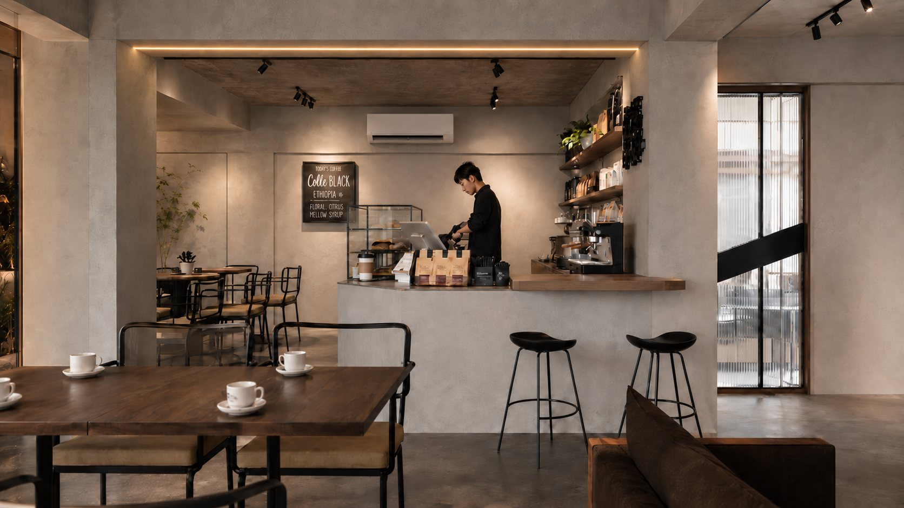
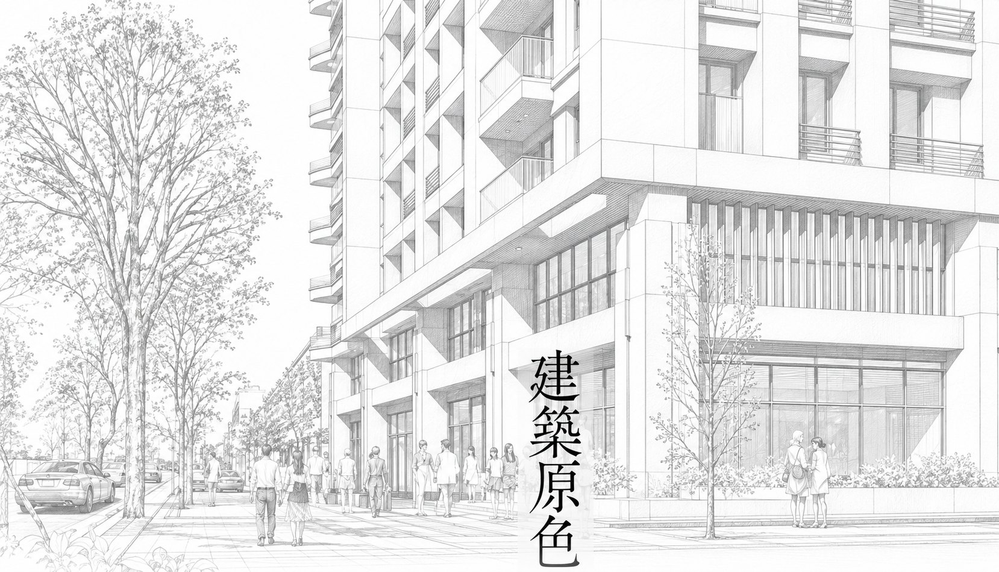
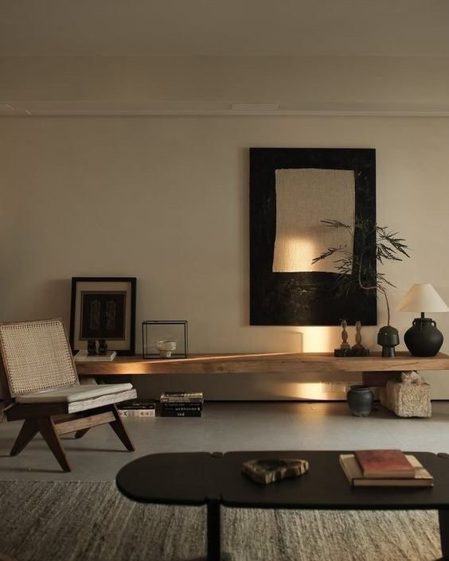

01
報價單漏項檢查
製作中


屋主工具
關於亦琚
我做設計，不是從挑風格開始，而是先看這個房子能怎麼做、該怎麼做。建築、結構、都計、材料到室內，我都走過一段，所以看一個空間時，我看的不只是完工的樣子，也看牆裡面、法規上，還有住久了會發生什麼。
亦琚長期和建商合作住宅案，習慣把圖面、預算和工地一起想清楚。這些經驗放到屋主身上，就是開工前把該問的問清楚、該算的算清楚：哪裡值得花錢、哪裡可以省，我都會直接告訴你。家是要住很久的地方，我希望你住進去以後，不用再為看不見的地方擔心。
陳琳耘 Chetana
建築物室內裝修專業施工技術人員

為什麼是亦琚
一個空間好不好住，不只在表面。亦琚以建築、結構、都計、材料、室內五個專業交叉判斷，讓美感建立在看得見的安全與看不見的合理之上。

01
先讀懂房子，再設計生活
我們不只看室內坪數，也讀建築本身的條件：座向、採光、通風、管道間與樑柱位置。先理解房子原本的邏輯，再決定空間怎麼長，格局才會順。
02
美感之下，是安全的底氣
拆牆、開口、加層板、懸吊重物，每一個決定都和結構安全有關。具備結構專業，我們能在設計階段就判斷可行性，不讓美感拿安全去換。
03
合乎規範，才能安心長住
從都市計畫與法規的角度評估：用途是否合法、裝修是否需要送審、周邊環境如何影響生活。先確認規範，再談設計，避免完工後才遇到問題。
04
經得起時間的，才是好材料
南部氣候較為濕熱、日照強烈，材料的耐候、防潮、防霉與維護性，往往比外觀更重要。我們以材料工程的角度挑選與搭配，讓空間經得起時間，十年後依然好看、好整理。
05
設計，從理解生活開始
前四項專業確保房子安全、合法、耐用，室內設計則讓它成為你的家。從每天的動線、停留的位置到收納習慣，我們先理解生活，再畫出空間。